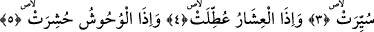
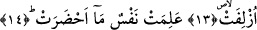

GÜNEŞ KATLANIP
DÜRÜLDÜĞÜNDE
Bismillâhirrahmânirrahîm
1. Güneş katlanıp dürüldüğünde,
2. Yıldızlar (kararıp) döküldüğünde,
3. Dağlar (sallanıp) yürütüldüğünde,
4. Gebe develer salıverildiğinde,
5. Vahşi hayvanlar toplanıp bir araya getirildiğinde,
6. Denizler kaynatıldığında,
7. Ruhlar (bedenlerle) birleştirildiğinde,
8. Diri diri toprağa gömülen kıza
9. Hangi günahtan ötürü öldürüldüğü sorulduğunda,
10. (Amellerin yazılı olduğu) Defterler açıldığında,
11. Gökyüzü sıyrılıp alındığında,
12. Cehennem tutuşturulduğunda,
13. Cennet yaklaştırıldığında,
14. Kişi ne hazırladığını bilecektir.
Güneş anlamına gelen “eş-şems” kelimesinin merfû olmasının sebebi gizli bir fiilin
fâili olmasıdır. Bu fiilin ne olduğunu okuduğumuz âyette yer alan “küvvirat” fiili tefsir
etmektedir. Ancak âyetteki zâhir olan fiil şems kelimesinin fiili değildir. Çünkü kural
gereği fâil fiilinden önce gelemez. Bazı âlimlere göre şems kelimesi mübtedâ olduğu
için merfûdur. Bunlara göre temel kural, cümleyi herhangi bir kelime takdir etmeden